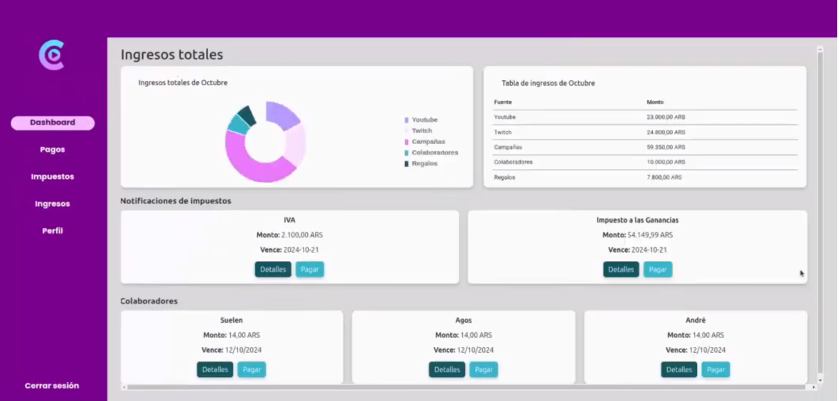
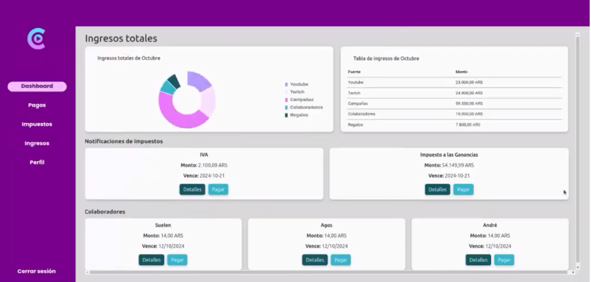

Mi Contribución al Proyecto
En este proyecto, desarrollé la lógica para el cálculo de impuestos según el país y los ingresos del usuario.
Además, implementé el sistema de notificaciones automáticas que envía emails sobre vencimientos fiscales y cambios críticos en la cuenta.
También colaboré en la seguridad de autenticación con confirmación de correo y códigos OTP.
Explicación Técnica de la Lógica Fiscal
1. strategy.py
Este archivo define la interfaz base para todas las estrategias fiscales utilizando el patrón Strategy.
Se declara una clase abstracta ObligacionesFiscalesStrategy que obliga a implementar el método
calcular_obligaciones en cada estrategia concreta. Esto garantiza que cada país implemente
su propia lógica para calcular impuestos, permitiendo ampliar fácilmente el sistema a otros países.
2. fiscal_strategy_factory.py
En este módulo se implementa una fábrica que selecciona la estrategia fiscal correcta según el país de residencia
del usuario. El método estático get_strategy evalúa el país (normalizado a minúsculas) y retorna
la instancia correspondiente (por ejemplo, ArgentinaFiscalStrategy para "argentina"). Si no se
encuentra una estrategia para el país indicado, se lanza una excepción. Esto centraliza la lógica de selección y
facilita la incorporación de nuevos países.
3. argentina_strategy.py
Este archivo implementa la lógica fiscal específica para Argentina, extendiendo la interfaz definida en
ObligacionesFiscalesStrategy. Entre sus funcionalidades se encuentran:
-
Cálculo de Ingresos: Se promedian los ingresos mensuales del usuario basándose en los registros
del año en curso.
-
Cálculo de Obligaciones: Dependiendo de si el usuario es monotributista o no, se calculan
distintos impuestos (Monotributo, IVA, Impuesto a las Ganancias) usando escalas y porcentajes específicos.
-
Gestión de Fechas: Se definen vencimientos (usualmente el día 20) y se ajustan si caen en fin
de semana, garantizando el cumplimiento de los plazos.
-
Persistencia: Las obligaciones se registran a través de un repositorio, evitando duplicados en
la base de datos.
Esta implementación resuelve la problemática de gestionar y automatizar el cálculo y registro de obligaciones
fiscales, adaptándose a las necesidades específicas de cada régimen impositivo en Argentina.
En resumen, esta arquitectura modular basada en el patrón Strategy y el uso de una Factory para
la selección dinámica de estrategias, permitió una solución escalable y mantenible para el cálculo fiscal en el
backend de YouCreate.

 
